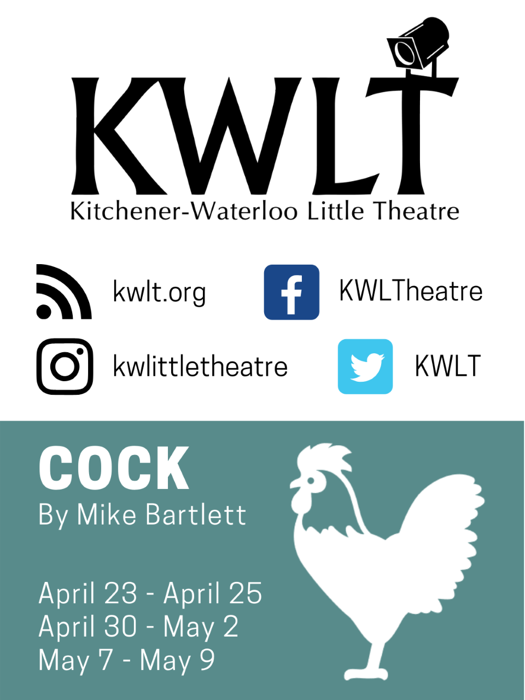

Home
Land Acknowledgement
People
Trailer
Dramaturgy Notes
Why THPERF
Upcoming Shows
Acknowledgements
Keep in Touch
Thank Yous
On behalf of the Theatre and Performance Program and the Creative Team for
UpStart 20
, we would like to extend a sincere thank you to the following people and organizations for their contributions to this production:
Centre in the Square
Coral Andrews
Rana Nemat Allah
The Victoria Playhouse
Donna Schell
Stephanie Ye-Mowe
Shamanta Haider
Community
